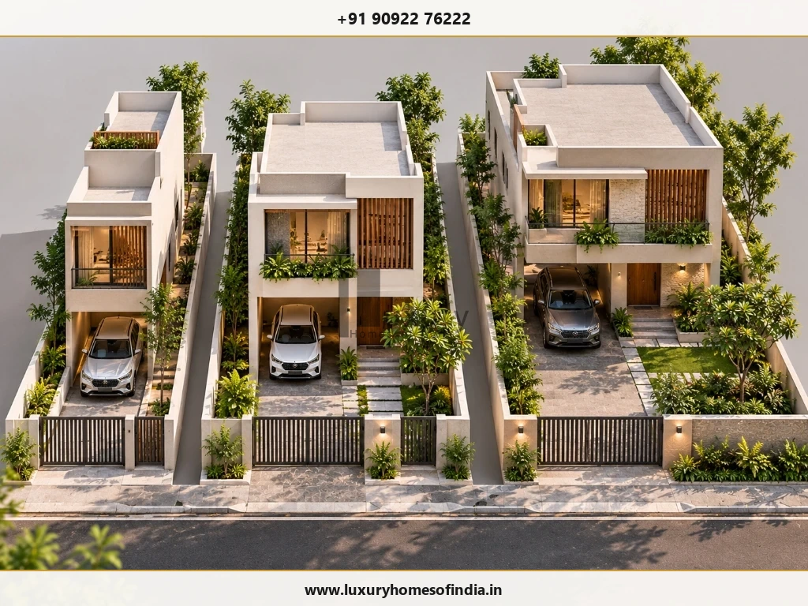
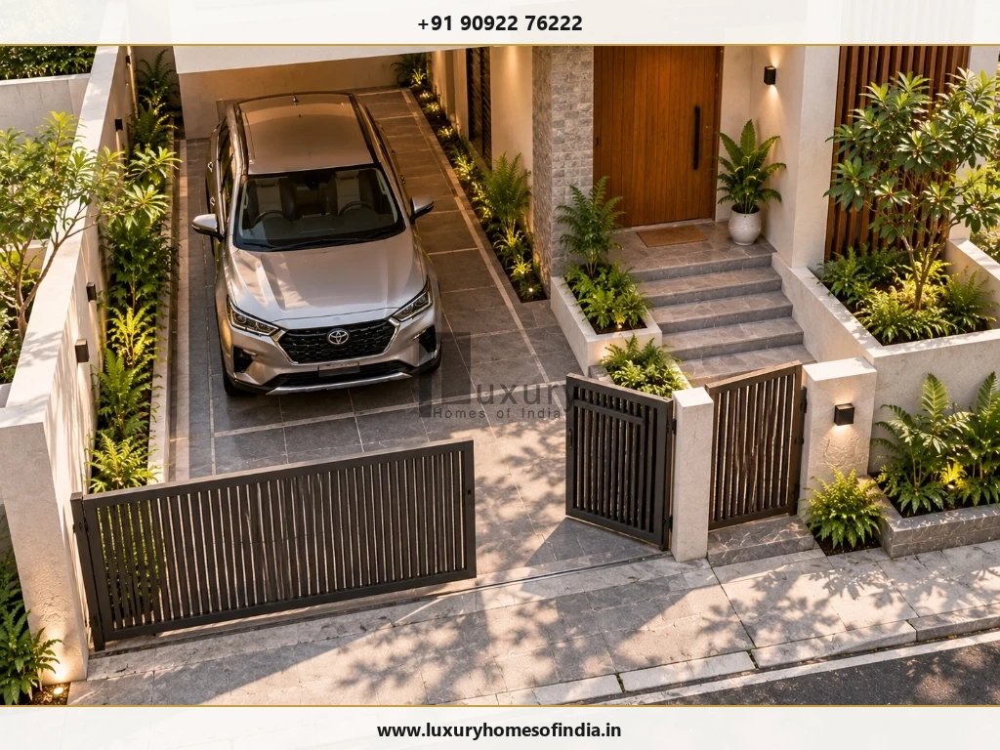
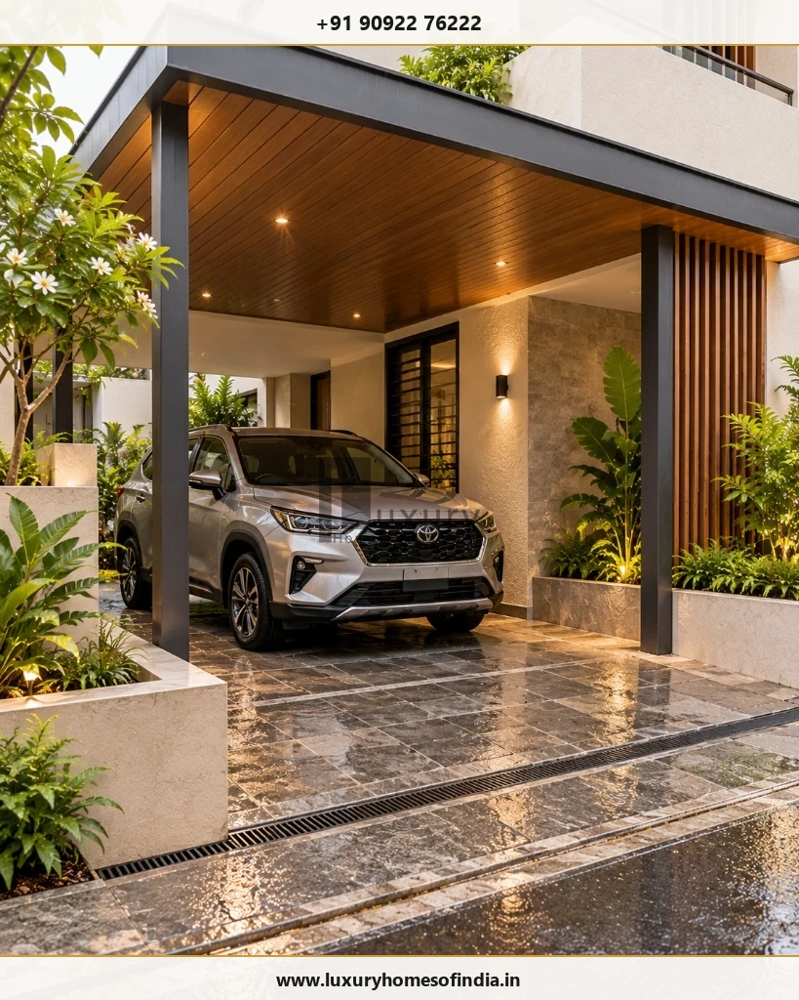
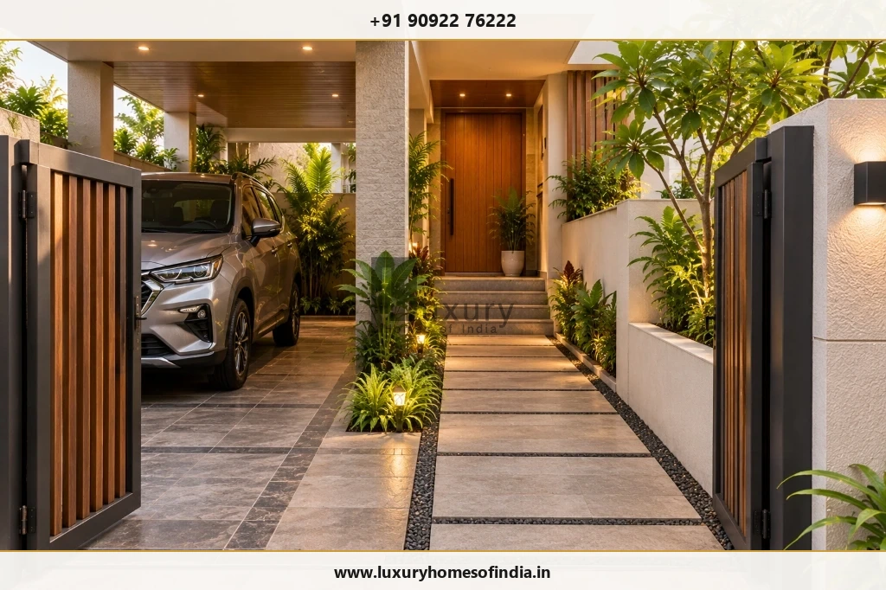

Executive Summary: Smart Parking on Small Plots
Planning car parking on a small residential plot requires more than finding a space for the vehicle. The parking bay, entrance gate, staircase, pedestrian route, drainage and ground-floor layout must work together without making everyday movement difficult. The best parking design for a small plot depends on its width, depth, road access, vehicle dimensions and the number of vehicles the household needs to accommodate.
For a compact Indian home, options worth exploring include front-side parking, a covered porch, tandem parking and a layout that integrates parking with the entrance and staircase. The practical approach is to test parking during the initial house-planning stage, check vehicle entry and exit, preserve safe pedestrian access, coordinate structural elements and verify applicable building regulations before submitting plans for approval.

1. Parking Ideas for Different Plot Sizes
Plot dimensions provide a starting point for planning, but they do not determine parking feasibility on their own. The usable area also depends on mandatory setbacks, permitted building footprint, road width, access angles, site levels and local development regulations.
Parking Design for a 20 × 40 ft Plot (800 sq ft)
A 20 × 40 ft plot has a gross land area of 800 sq ft. With limited frontage (20 feet), the position of the gate and the relationship between the parking bay and the main entrance become particularly critical.
Layouts worth testing include:
- Front-side single-car parking bay: Placing the car along one side boundary if clear width allows (minimum 2.5 m / 8.2 ft).
- Direct vehicle approach: Aligning the car gate directly with the parking bay to eliminate turning maneuvers inside the plot.
- Separate two-wheeler alcove: Providing a small dedicated bay for scooters or bikes near the entrance without choking the walking path.
- Integrated covered portico: Utilizing the first-floor bedroom cantilever as the parking roof.
Parking Design for a 30 × 40 ft Plot (1,200 sq ft)
A 30 × 40 ft plot has a gross land area of 1,200 sq ft. Its wider frontage (30 feet) provides greater flexibility for arranging a dedicated single-car bay alongside a gracious, separate pedestrian arrival route.
Options to explore include:
- Front-side parking beside the main entrance: Keeps vehicular fumes and movement separated from the entrance foyer.
- Covered porch integrated with front elevation: Enhances facade aesthetics while offering complete rain and sun protection.
- Combined car and two-wheeler zone: Accommodates one car and 2 motorcycles side-by-side without mutual obstruction.
- Parking coordinated with external staircase: Placing an external or semi-external staircase adjacent to parking for rental or upper-floor duplex access.
Parking Design for a 30 × 50 ft Plot (1,500 sq ft)
A 30 × 50 ft plot has a gross land area of 1,500 sq ft. The additional depth (50 feet) creates flexibility for the entrance sequence, front garden landscaping, or tandem two-car parking.
A single-car bay with a separate walking route is a great starting point. If two cars are required, evaluate both side-by-side and tandem layouts using actual vehicle dimensions and daily driving schedules. Remember: greater plot depth does not automatically guarantee two-car parking—turning radius, gate width, and house entry must still be validated.
Parking for a G+1 House
A G+1 house features a ground floor and one upper floor. Whether the upper floor is built immediately or phased for the future, parking and staircase placement must be synchronized from day one:
- Clear vehicular route: Ensure columns supporting upper-floor slabs do not pinch the driveway or door-opening radius.
- Staircase position: Avoid placing the staircase landing directly behind a parked car where passengers would have to squeeze through.
- Utility meters and chambers: Maintain clear walking access to EB meters, water meters, rainwater inspection chambers, and sump covers even when cars are parked.

2. How Much Space Is Needed for Car Parking?
A car parking bay must accommodate the vehicle itself while allowing passengers to open doors, step out comfortably, unload luggage, and walk around safely. The exact required dimensions depend on vehicle class, boundary walls, and statutory norms.
As an initial architectural planning reference, a clear bay measuring approximately 2.5 m wide × 5.0 m long (approx. 8.2 ft × 16.4 ft) is the standard starting baseline. For larger SUVs or luxury sedans, a bay of 3.0 m × 5.5 m (approx. 9.8 ft × 18.0 ft) is strongly recommended.
| Design Element | What to Verify on the Architectural Drawing |
|---|---|
| Parking Bay Dimensions | Verify actual bumper-to-bumper vehicle length and side-mirror width against clear interior dimensions between walls and columns. |
| Door Clearance | Provide at least 600 mm to 800 mm of clear space beside driver and passenger doors to open without hitting compound walls or columns. |
| Gate Opening Width | Minimum clear opening of 3.0 m (10 ft) for straight access; 3.6 m (12 ft) if the access road is narrow (under 30 ft) and requires an angled turn. |
| Vehicle Turning Approach | Conduct a swept-path analysis showing the car's turning radius from the street across the entrance threshold into the bay. |
| Pedestrian Walkway | Maintain a minimum 900 mm (3 ft) unobstructed route between the main gate and the entrance foyer. |
| Vertical Headroom Clearance | Minimum clear height of 2.4 m (8 ft) below concrete beams, false ceilings, downspouts, and overhead light fixtures. |
| Structural Elements | Check that RCC column projections and footing offsets do not encroach into the parking bay or restrict tire paths. |
| Drainage & Levels | Ensure a 1:50 to 1:100 surface slope towards the street storm drain with an integrated silt trap to avoid puddling. |
| Utility & Service Access | Ensure unhindered access to EB meter boxes, underground water sumps, borewell heads, and drainage inspection chambers. |
Warning: A vehicle may look comfortable inside a 2D CAD rectangle, but if the turning radius from a 20-foot street is too tight, parking every evening will be stressful. Always request an entry turning template from your architect.

3. Five Car Parking Layouts for Small Homes
Selecting the ideal parking layout depends on plot frontage, road width, and family vehicle usage. Here are the 5 most effective strategies:
Option A Front-Side Parking
The car is positioned in the front setback along one boundary wall, directly adjacent to the arrival walkway.
- Pros: Direct straight drive-in from the road; minimal site disturbance; easy coordination with elevation.
- Trade-offs: Consumes front open garden area; requires careful placement of pedestrian wicket gate.
Option B Covered Porch Parking
A solid RCC slab or architectural canopy cantilevers from the main structure to shelter the vehicle.
- Pros: Protects vehicle from sun and monsoon rains; seamless architectural unity; dry boarding during rains.
- Trade-offs: Requires careful structural column design; must comply with municipal setback rules.
Option C Tandem Parking
Two vehicles parked end-to-end in a linear driveway. Ideal for long, narrow plots (e.g., 20×50 or 30×60 ft).
- Pros: Accommodates two cars without demanding wide street frontage; preserves building width.
- Trade-offs: One car must be moved before the inner car can exit; inconvenient for different family schedules.
Option D Dedicated Two-Wheeler Alcove
A recessed parking pocket exclusively designed for two-wheelers and bicycles.
- Pros: Prevents two-wheelers from blocking the car's path or choking the main entrance door.
- Trade-offs: Requires 1.2 m × 2.0 m of space; best tucked under staircase or beside gate pillar.
Option E Integrated Ground-Floor Stilt / Cut-In Bay
The parking bay is carved directly into the ground floor building envelope under first-floor living rooms.
- Pros: Maximum site efficiency; complete shade; direct internal foyer access without stepping outdoors.
- Trade-offs: Requires heavier structural transfer beams; ground-floor living area is reduced; acoustic insulation needed for rooms above.
4. Space-Saving Ideas for Small-Plot Parking
Maximizing efficiency on a compact plot requires clever engineering and architectural details:
- Choose sliding gates over swing gates: A traditional swing gate sweeps inward, claiming up to 8–10 feet of usable driveway depth. A motorized or manual sliding gate tracks along the compound wall, freeing the entire driveway for parking.
- Incorporate a pedestrian wicket gate: Build a small 3-foot swing door inside or beside the main sliding gate. This allows family members and visitors to enter without opening the heavy vehicular gate.
- Coordinate staircase geometry early: If placing parking under or beside an external staircase, verify headroom clearances. A car hood needs at least 1.5 m, but an SUV cabin requires 2.2 m clear vertical clearance.
- Integrate EV charging provisions: Route a dedicated 32A/7.4kW single-phase or three-phase electrical conduit to the parking pillar during foundation work. Adding surface conduits later looks messy and costs more.
- Use column chamfers and recessed downspouts: Avoid protruding PVC rainwater pipes into the parking bay where opening car doors can crack them. Conceal pipes in wall chases.

5. How to Plan Parking for Two Cars on a Small Plot
Accommodating two cars on a plot under 1,500 sq ft requires rigorous feasibility checks. The two primary configurations are:
1. Side-by-Side Parking
Requires a clear plot frontage of at least 5.5 m to 6.0 m (18–20 ft).
Allows both vehicles to enter and depart independently. However, on a 30-foot wide plot, two cars side-by-side leave only 10 feet for side setbacks, compound walls, and the pedestrian entrance walkway.
2. Tandem (Linear) Parking
Requires a clear driveway depth of at least 10.5 m to 11.0 m (35–36 ft).
Conserves plot width for house rooms and gardens. The inner car is blocked by the outer car, making this best suited for households where one vehicle is used daily and the second is parked occasionally.
When 1-car parking is more practical: If forcing two cars compromises structural column spacing, eliminates the living room foyer, or forces people to walk through wet tire tracks, it is often far wiser to plan a comfortable 1-car bay with dedicated two-wheeler bays.
6. Covered vs Open Parking: Which Is Better?
Both covered and open parking have distinct advantages depending on plot geometry, budget, and building regulations:
| Planning Consideration | Open Parking Bay | Covered Parking Porch |
|---|---|---|
| Weather Protection | Vehicle exposed to tropical sun, bird droppings, and heavy rain. | Full shade protects car paint, interior leather, and keeps vehicle cabin cool. |
| Structural Cost | Low cost; only ground paving and boundary gate required. | Higher cost; requires cantilevered RCC slab or steel/polycarbonate canopy. |
| Natural Light & Airiness | Preserves open-to-sky feel in front of ground-floor windows. | Can block natural light to ground-floor living room if porch is too deep. |
| FSI & Setback Rules | Open surface parking does not count toward built-up area (FSI). | Cantilevers exceeding permissible limits may violate municipal setback rules. |
| Drainage Upkeep | Simple surface paving slopes toward perimeter drains. | Requires coordinated roof drainage, downspouts, and surface runoff traps. |
7. Parking Flooring, Drainage and Safety
A residential driveway must be engineered to withstand daily vehicle tire torque, torrential monsoon downpours, and wet pedestrian safety:
- Flooring Materials: Choose flamed granite slabs, rough-textured basalt cobbles, heavy-duty anti-skid vitrified parking pavers (minimum 12 mm to 16 mm thickness), or vacuum-dewatered stamped concrete (VDF). Avoid smooth polished marble or glazed tiles, which become dangerously slick when wet.
- Drainage Slopes & Linear Trenches: Install a continuous slotted stainless steel trench drain across the main gate threshold. This catches street stormwater from entering the plot during heavy rains and directs driveway wash water into rainwater harvesting pits.
- Security & Illumination: Position anti-glare warm LED bollard lights (3000K) along the pedestrian walkway and motion-sensor floodlights in the car porch for effortless night arrival.
- Universal Accessibility: Maintain gentle ramp slopes (1:12 maximum gradient) from the driveway up to the entrance foyer verandah to facilitate elder and stroller access.

8. Parking Rules and Building Approval in Chennai
In Chennai and Tamil Nadu, residential car parking requirements are governed by the Tamil Nadu Combined Development and Building Rules (TNCDBR), 2019. While individual houses on small plots have simplified requirements compared to multi-dwelling apartments, setback compliance and driveway access are strictly scrutinized during plan sanction.
Homeowners should verify regulatory requirements directly through official planning authorities before finalizing drawings:
Official Regulatory Links:
- Greater Chennai Corporation — Town Planning Services: GCC Online Services
- Greater Chennai Corporation — Town Planning Department: GCC Town Planning
- Chennai Metropolitan Development Authority: CMDA Portal
- TNCDBR 2019 Official CMDA Document: TNCDBR-2019 PDF
- TNCDBR Amendments: TNCDBR Amendments PDF
Explore our related statutory and planning guides:
9. Common Parking Design Mistakes to Avoid
- Designing parking as an afterthought: Fitting the car after the floor plan is finalized leads to awkward columns and blocked entrances.
- Checking only the car's body dimensions: Ignoring door swings, passenger entry, and rear trunk access.
- Under-sizing the main gate opening: Providing a 9-foot gate on a narrow street makes daily parking turns extremely difficult.
- Choking pedestrian circulation: Forcing family members to squeeze through tight, dirty wheel gaps to enter their home.
- Ignoring structural columns: Discovering on-site that an RCC column lands right in the driver's door-opening zone.
- Neglecting rainwater slope: Allowing rainwater to flow backwards from the street into the car porch or living room threshold.
- Assuming two cars will fit automatically: Overestimating plot capacity without testing turning radius and vehicular movement.
Frequently Asked Questions
Plan Your Compact Luxury Home with Luxury Homes of India
A well-considered parking layout should support everyday convenience without compromising your entrance, garden setbacks, or structural aesthetics. Our senior architects specialize in intelligent space optimization for urban plots across Chennai.
Written by Luxury Homes of India Editorial
Our architecture and construction planning team has engineered hundreds of bespoke residences across Tamil Nadu, specializing in efficient plot planning, TNCDBR approvals, and luxury spatial design.
Reviewed by: Senior Architectural Director, LHI Urban Planning